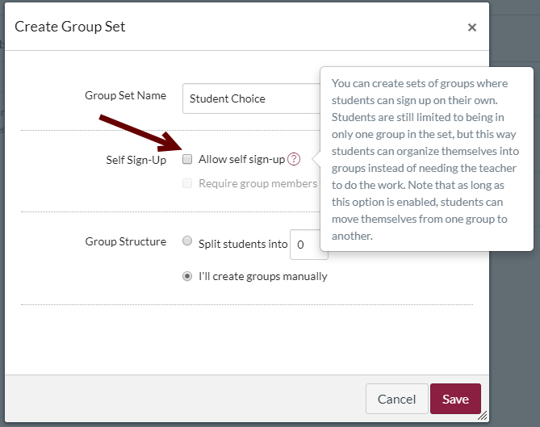
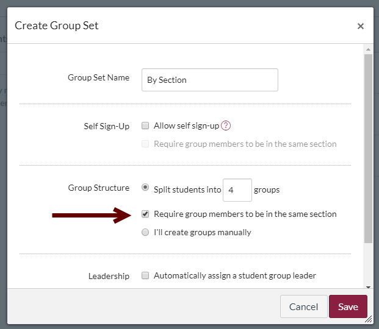
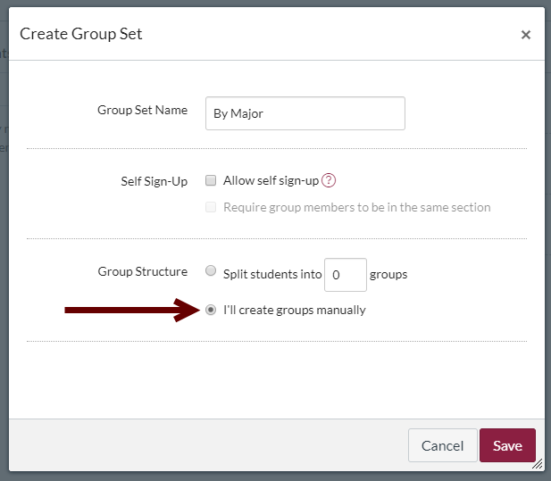

Asking students to complete activities in small groups builds their collaborative skills and encourages community support and learning. This month’s post focuses on ways to set up small groups that work in online courses.
What Does Research & Scholarship Say?
Teachers play a significant role in the ways groups are established and how they work together, yet there is little evidence to guide them toward the most effective group formation.
Kaye and Barrett (2018) assert, “[T]he complexity of social processes mean that we cannot naively assume that simply putting several students into the same online space will create a team. Rather we must learn how to provide effective environments to facilitate group formation and teamwork” (p. 60).
Despite the importance of group formation, the most effective way to build groups online has not been established. Based on a review of 41 articles that examined aspects of online groups, Cherney, Fetherston and Johnsen (2018) found that “group size research shows conflicting results, and optimal group size in online students' work groups has not been empirically determined by existing research” (p. 103). Further, the researchers concluded that the most effective way to form student groups is unclear, with conflicting opinions reflected in their sample (Cherney, Fetherston and Johnsen, 2018, p. 105).
Strategies for Setting Up Groups
As with many aspects of teaching, the best strategies probably depend upon your situation, your students, and the kinds of work that they will do together. For each of the following ways of forming groups online, consider how the option will work given your particular situation.
- Group by Student Choice
- Allowing students to form their own groups is a difficult strategy to use in fully online courses. Students do not know from a glance around the room which groups are too small or include people they know. They are likely to choose by looking at names and making (possibly stereotyped) assumptions about whom they will work well with. Groups would be stronger if formed around learning preferences, student capabilities, and the knowledge they bring to the group, none of which is visible online. As a result, online groups arranged by choice are rarely the most effective way to set up collaboration online.
If you decide to use student choice however, you can set up groups by student choice in Canvas by choosing the Allow self sign-up checkbox by the Self Sign-Up label (shown below with the online help popup) when you create a group set.

Click for full size image
- Group by Section
- If you teach multiple sections of the same class, you may have one online course that all sections have access to for assignments and online work. In such course configurations, creating a group set that is based on the sections in the course can help you manage due dates that differ by section as well as create groups large enough for discussion without being overwhelming.
In Canvas, use the options in the Group Structure section of the Create Group Set dialog to set up a group for each section. Tell Canvas to split the course into as many groups as you have sections. For instance, I teach four sections of Technical Writing, so I have indicated that I want four groups. Next, check the Require group members to be in the same section checkbox (shown in the image below). When you click the Save button, Canvas will automatically sort students into groups by course section.

Click for full-size image
- Group Randomly
- This strategy arranges students without any particular organizing principle. It can work well for situations where students need have no similar characteristics.
In Canvas, use the options in the Group Structure section of the Create Group Set dialog (shown in the screenshot above) to set up as many groups as you want. Canvas will randomly sort all students into the indicated number of groups.
- Group by Subject Area, Major, and/or College
- For projects where students will work on projects related to their intended careers, homogenous groups based on students’ current area of study are ideal.
Use course registration information to determine the details for each student or, if necessary, ask students for the relevant details.
In Canvas, set up your groups manually. In the Group Structure section of the Create Group Set dialog (shown in the screenshot below), toggle the radio button by the label I’ll create groups manually, and then Save your set.

Click for full-size image
After saving your set,
- Group by Timezone
- To allow for geographically distant collaboaration and other great things
- Group by Schedule
- For courses with no assigned meeting time, grouping students by when they tend to do their work can be quite successful. When students are working during similar timeframes, they are better able to collaborate and connect with one another. To set this system up
Read More
References
Cherney, Maura R., Fetherston, Michelle, & Johnsen, Lauren Jean. (2018). Online Course Student Collaboration Literature: A Review and Critique. Small Group Research, 49(1), 98–128. https://doi.org/10.1177/1046496417721627
Gardner, Traci. (2018). One Big New Thing: Changing How Groups Are Set Up. Teaching Digital Natives column on Bedford Bits Blog.
Kaye, Helen, and Barrett, Jane (2018). Making Online Teams Work. In Baxter, Jacqueline, Callaghan, George, & McAvoy, Jean (Eds). Creativity and Critique in Online Learning: Exploring and Examining Innovations in Online Pedagogy. Springer Berlin Heidelberg. https://doi.org/10.1007/978-3-319-78298-0_4
Sadeghi, Hamid, & Kardan, Ahmad A. (2015). A novel justice-based linear model for optimal learner group formation in computer-supported collaborative learning environments. Computers in Human Behavior, 48, 436–447. https://doi.org/10.1016/j.chb.2015.01.020
Feedback on the November 2019 Post
Please complete the Exit Ticket to give us feedback on this post and help us evaluate the use of this site.
Complete the Exit Ticket
Photo credit: EdCampOKC Google Hangout: 21 Jan 2014 by Wesley Fryer on Flickr, used under a CC-BY 2.0 license.